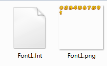

BMFont位图
我们在制作游戏的过程中经常要使用各式各样的艺术字体，这些字体让我们的游戏看起来更加美观。
制作流程
- 首先准备好你的艺术字体散图，如图所示
- 下载安装cocos creator。
- 打开cocos creator，下载插件并安装creator插件，该插件为收费插件，因项目需要内部共享，请配合保密，谢谢合作，购买地址。
- 插件详细的使用说明点击查看。
- 最终交付给程序的文件为：
 - 注意资源文件名。
常见问题
- 后续补充。。。
我们在制作游戏的过程中经常要使用各式各样的艺术字体，这些字体让我们的游戏看起来更加美观。